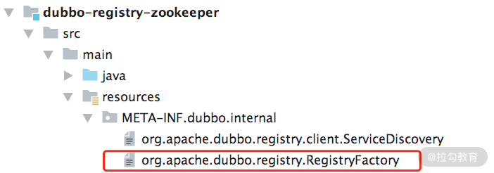
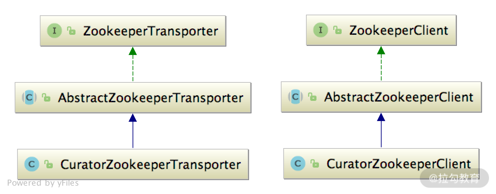
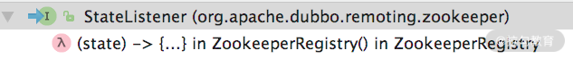
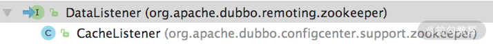
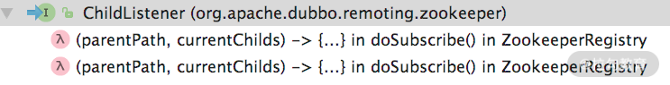
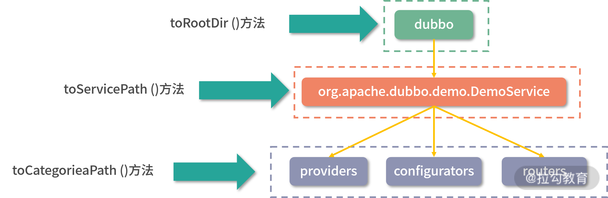

- 00 开篇词 深入掌握 Dubbo 原理与实现，提升你的职场竞争力.md.html
- 01 Dubbo 源码环境搭建：千里之行，始于足下.md.html
- 02 Dubbo 的配置总线：抓住 URL，就理解了半个 Dubbo.md.html
- 03 Dubbo SPI 精析，接口实现两极反转（上）.md.html
- 04 Dubbo SPI 精析，接口实现两极反转（下）.md.html
- 05 海量定时任务，一个时间轮搞定.md.html
- 06 ZooKeeper 与 Curator，求你别用 ZkClient 了（上）.md.html
- 07 ZooKeeper 与 Curator，求你别用 ZkClient 了（下）.md.html
- 08 代理模式与常见实现.md.html
- 09 Netty 入门，用它做网络编程都说好（上）.md.html
- 10 Netty 入门，用它做网络编程都说好（下）.md.html
- 11 简易版 RPC 框架实现（上）.md.html
- 12 简易版 RPC 框架实现（下）.md.html
- 13 本地缓存：降低 ZooKeeper 压力的一个常用手段.md.html
- 14 重试机制是网络操作的基本保证.md.html
- 15 ZooKeeper 注册中心实现，官方推荐注册中心实践.md.html
- 16 Dubbo Serialize 层：多种序列化算法，总有一款适合你.md.html
- 17 Dubbo Remoting 层核心接口分析：这居然是一套兼容所有 NIO 框架的设计？.md.html
- 18 Buffer 缓冲区：我们不生产数据，我们只是数据的搬运工.md.html
- 19 Transporter 层核心实现：编解码与线程模型一文打尽（上）.md.html
- 20 Transporter 层核心实现：编解码与线程模型一文打尽（下）.md.html
- 21 Exchange 层剖析：彻底搞懂 Request-Response 模型（上）.md.html
- 22 Exchange 层剖析：彻底搞懂 Request-Response 模型（下）.md.html
- 23 核心接口介绍，RPC 层骨架梳理.md.html
- 24 从 Protocol 起手，看服务暴露和服务引用的全流程（上）.md.html
- 25 从 Protocol 起手，看服务暴露和服务引用的全流程（下）.md.html
- 26 加餐：直击 Dubbo “心脏”，带你一起探秘 Invoker（上）.md.html
- 27 加餐：直击 Dubbo “心脏”，带你一起探秘 Invoker（下）.md.html
- 28 复杂问题简单化，代理帮你隐藏了多少底层细节？.md.html
- 29 加餐：HTTP 协议 + JSON-RPC，Dubbo 跨语言就是如此简单.md.html
- 30 Filter 接口，扩展 Dubbo 框架的常用手段指北.md.html
- 31 加餐：深潜 Directory 实现，探秘服务目录玄机.md.html
- 32 路由机制：请求到底怎么走，它说了算（上）.md.html
- 33 路由机制：请求到底怎么走，它说了算（下）.md.html
- 34 加餐：初探 Dubbo 动态配置的那些事儿.md.html
- 35 负载均衡：公平公正物尽其用的负载均衡策略，这里都有（上）.md.html
- 36 负载均衡：公平公正物尽其用的负载均衡策略，这里都有（下）.md.html
- 37 集群容错：一个好汉三个帮（上）.md.html
- 38 集群容错：一个好汉三个帮（下）.md.html
- 39 加餐：多个返回值不用怕，Merger 合并器来帮忙.md.html
- 40 加餐：模拟远程调用，Mock 机制帮你搞定.md.html
- 41 加餐：一键通关服务发布全流程.md.html
- 42 加餐：服务引用流程全解析.md.html
- 43 服务自省设计方案：新版本新方案.md.html
- 44 元数据方案深度剖析，如何避免注册中心数据量膨胀？.md.html
- 45 加餐：深入服务自省方案中的服务发布订阅（上）.md.html
- 46 加餐：深入服务自省方案中的服务发布订阅（下）.md.html
- 47 配置中心设计与实现：集中化配置 and 本地化配置，我都要（上）.md.html
- 48 配置中心设计与实现：集中化配置 and 本地化配置，我都要（下）.md.html
- 49 结束语 认真学习，缩小差距.md.html
15 ZooKeeper 注册中心实现，官方推荐注册中心实践
Dubbo 支持 ZooKeeper 作为注册中心服务，这也是 Dubbo 推荐使用的注册中心。为了让你能更好地理解 ZooKeeper 在 Dubbo 中的应用，接下来我们就先简单回顾下 ZooKeeper。
Dubbo 本身是一个分布式的 RPC 开源框架，各个依赖于 Dubbo 的服务节点都是单独部署的，为了让 Provider 和 Consumer 能够实时获取彼此的信息，就得依赖于一个一致性的服务发现组件实现注册和订阅。Dubbo 可以接入多种服务发现组件，例如，ZooKeeper、etcd、Consul、Eureka 等。其中，Dubbo 特别推荐使用 ZooKeeper。
ZooKeeper 是为分布式应用所设计的高可用且一致性的开源协调服务。它是一个树型的目录服务，支持变更推送，非常适合应用在生产环境中。
下面是 Dubbo 官方文档中的一张图，展示了 Dubbo 在 Zookeeper 中的节点层级结构：

Zookeeper 存储的 Dubbo 数据
图中的“dubbo”节点是 Dubbo 在 Zookeeper 中的根节点，“dubbo”是这个根节点的默认名称，当然我们也可以通过配置进行修改。
图中 Service 这一层的节点名称是服务接口的全名，例如 demo 示例中，该节点的名称为“org.apache.dubbo.demo.DemoService”。
图中 Type 这一层的节点是 URL 的分类，一共有四种分类，分别是：providers（服务提供者列表）、consumers（服务消费者列表）、routes（路由规则列表）和 configurations（配置规则列表）。
根据不同的 Type 节点，图中 URL 这一层中的节点包括：Provider URL 、Consumer URL 、Routes URL 和 Configurations URL。
ZookeeperRegistryFactory
在前面第 13 课时介绍 Dubbo 注册中心核心概念的时候，我们讲解了 RegistryFactory 这个工厂接口以及其子类 AbstractRegistryFactory，AbstractRegistryFactory 仅仅是提供了缓存 Registry 对象的功能，并未真正实现 Registry 的创建，具体的创建逻辑是由子类完成的。在 dubbo-registry-zookeeper 模块中的 SPI 配置文件（目录位置如下图所示）中，指定了RegistryFactory 的实现类—— ZookeeperRegistryFactory。

RegistryFactory 的 SPI 配置文件位置
ZookeeperRegistryFactory 实现了 AbstractRegistryFactory，其中的 createRegistry() 方法会创建 ZookeeperRegistry 实例，后续将由该 ZookeeperRegistry 实例完成与 Zookeeper 的交互。
另外，ZookeeperRegistryFactory 中还提供了一个 setZookeeperTransporter() 方法，你可以回顾一下之前我们介绍的 Dubbo SPI 机制，会通过 SPI 或 Spring Ioc 的方式完成自动装载。
ZookeeperTransporter
dubbo-remoting-zookeeper 模块是 dubbo-remoting 模块的子模块，但它并不依赖 dubbo-remoting 中的其他模块，是相对独立的，所以这里我们可以直接介绍该模块。
简单来说，dubbo-remoting-zookeeper 模块是在 Apache Curator 的基础上封装了一套 Zookeeper 客户端，将与 Zookeeper 的交互融合到 Dubbo 的体系之中。
dubbo-remoting-zookeeper 模块中有两个核心接口：ZookeeperTransporter 接口和 ZookeeperClient 接口。
ZookeeperTransporter 只负责一件事情，那就是创建 ZookeeperClient 对象。
@SPI("curator")
public interface ZookeeperTransporter {
@Adaptive({Constants.CLIENT_KEY, Constants.TRANSPORTER_KEY})
ZookeeperClient connect(URL url);
}
我们从代码中可以看到，ZookeeperTransporter 接口被 @SPI 注解修饰，成为一个扩展点，默认选择扩展名 “curator” 的实现，其中的 connect() 方法用于创建 ZookeeperClient 实例（该方法被 @Adaptive 注解修饰，我们可以通过 URL 参数中的 client 或 transporter 参数覆盖 @SPI 注解指定的默认扩展名）。

按照前面对 Registry 分析的思路，作为一个抽象实现，AbstractZookeeperTransporter 肯定是实现了创建 ZookeeperClient 之外的其他一些增强功能，然后由子类继承。不然的话，直接由 CuratorZookeeperTransporter 实现 ZookeeperTransporter 接口创建 ZookeeperClient 实例并返回即可，没必要在继承关系中再增加一层抽象类。
public class CuratorZookeeperTransporter extends
AbstractZookeeperTransporter {
// 创建ZookeeperClient实例
public ZookeeperClient createZookeeperClient(URL url) {
return new CuratorZookeeperClient(url);
}
}
AbstractZookeeperTransporter 的核心功能有如下：
- 缓存 ZookeeperClient 实例；
- 在某个 Zookeeper 节点无法连接时，切换到备用 Zookeeper 地址。
在配置 Zookeeper 地址的时候，我们可以配置多个 Zookeeper 节点的地址，这样的话，当一个 Zookeeper 节点宕机之后，Dubbo 就可以主动切换到其他 Zookeeper 节点。例如，我们提供了如下的 URL 配置：
zookeeper://127.0.0.1:2181/org.apache.dubbo.registry.RegistryService?backup=127.0.0.1:8989,127.0.0.1:9999
AbstractZookeeperTransporter 的 connect() 方法首先会得到上述 URL 中配置的 127.0.0.1:2181、127.0.0.1:8989 和 127.0.0.1:9999 这三个 Zookeeper 节点地址，然后从 ZookeeperClientMap 缓存（这是一个 Map，Key 为 Zookeeper 节点地址，Value 是相应的 ZookeeperClient 实例）中查找一个可用 ZookeeperClient 实例。如果查找成功，则复用 ZookeeperClient 实例；如果查找失败，则创建一个新的 ZookeeperClient 实例返回并更新 ZookeeperClientMap 缓存。
ZookeeperClient 实例连接到 Zookeeper 集群之后，就可以了解整个 Zookeeper 集群的拓扑，后续再出现 Zookeeper 节点宕机的情况，就是由 Zookeeper 集群本身以及 Apache Curator 共同完成故障转移。
ZookeeperClient
从名字就可以看出，ZookeeperClient 接口是 Dubbo 封装的 Zookeeper 客户端，该接口定义了大量的方法，都是用来与 Zookeeper 进行交互的。
- create() 方法：创建 ZNode 节点，还提供了创建临时 ZNode 节点的重载方法。
- getChildren() 方法：获取指定节点的子节点集合。
- getContent() 方法：获取某个节点存储的内容。
- delete() 方法：删除节点。
- addListener() / removeListener() 方法：添加/删除监听器。
- close() 方法：关闭当前 ZookeeperClient 实例。
AbstractZookeeperClient 作为 ZookeeperClient 接口的抽象实现，主要提供了如下几项能力：
- 缓存当前 ZookeeperClient 实例创建的持久 ZNode 节点；
- 管理当前 ZookeeperClient 实例添加的各类监听器；
- 管理当前 ZookeeperClient 的运行状态。
我们来看 AbstractZookeeperClient 的核心字段，首先是 persistentExistNodePath（ConcurrentHashSet<String>类型）字段，它缓存了当前 ZookeeperClient 创建的持久 ZNode 节点路径，在创建 ZNode 节点之前，会先查这个缓存，而不是与 Zookeeper 交互来判断持久 ZNode 节点是否存在，这就减少了一次与 Zookeeper 的交互。
dubbo-remoting-zookeeper 对外提供了 StateListener、DataListener 和 ChildListener 三种类型的监听器。
- StateListener：主要负责监听 Dubbo 与 Zookeeper 集群的连接状态，包括 SESSION_LOST、CONNECTED、RECONNECTED、SUSPENDED 和 NEW_SESSION_CREATED。

- DataListener：主要监听某个节点存储的数据变化。

- **ChildListener：**主要监听某个 ZNode 节点下的子节点变化。

在 AbstractZookeeperClient 中维护了 stateListeners、listeners 以及 childListeners 三个集合，分别管理上述三种类型的监听器。虽然监听内容不同，但是它们的管理方式是类似的，所以这里我们只分析 listeners 集合的操作：
public void addDataListener(String path,
DataListener listener, Executor executor) {
// 获取指定path上的DataListener集合
ConcurrentMap<DataListener, TargetDataListener> dataListenerMap =
listeners.computeIfAbsent(path, k -> new ConcurrentHashMap<>());
// 查询该DataListener关联的TargetDataListener
TargetDataListener targetListener =
dataListenerMap.computeIfAbsent(listener,
k -> createTargetDataListener(path, k));
// 通过TargetDataListener在指定的path上添加监听
addTargetDataListener(path, targetListener, executor);
}
这里的 createTargetDataListener() 方法和 addTargetDataListener() 方法都是抽象方法，由 AbstractZookeeperClient 的子类实现，TargetDataListener 是 AbstractZookeeperClient 中标记的一个泛型。
为什么 AbstractZookeeperClient 要使用泛型定义？这是因为不同的 ZookeeperClient 实现可能依赖不同的 Zookeeper 客户端组件，不同 Zookeeper 客户端组件的监听器实现也有所不同，而整个 dubbo-remoting-zookeeper 模块对外暴露的监听器是统一的，就是上面介绍的那三种。因此，这时就需要一层转换进行解耦，这层解耦就是通过 TargetDataListener 完成的。
虽然在 Dubbo 2.7.7 版本中只支持 Curator，但是在 Dubbo 2.6.5 版本的源码中可以看到，ZookeeperClient 还有使用 ZkClient 的实现。
在最新的 Dubbo 版本中，CuratorZookeeperClient 是 AbstractZookeeperClient 的唯一实现类，在其构造方法中会初始化 Curator 客户端并阻塞等待连接成功：
public CuratorZookeeperClient(URL url) {
super(url);
int timeout = url.getParameter("timeout", 5000);
int sessionExpireMs = url.getParameter("zk.session.expire",
60000);
CuratorFrameworkFactory.Builder builder =
CuratorFrameworkFactory.builder()
.connectString(url.getBackupAddress())//zk地址(包括备用地址)
.retryPolicy(new RetryNTimes(1, 1000)) // 重试配置
.connectionTimeoutMs(timeout) // 连接超时时长
.sessionTimeoutMs(sessionExpireMs); // session过期时间
... // 省略处理身份验证的逻辑
client = builder.build();
// 添加连接状态的监听
client.getConnectionStateListenable().addListener(
new CuratorConnectionStateListener(url));
client.start();
boolean connected = client.blockUntilConnected(timeout,
TimeUnit.MILLISECONDS);
... // 检测connected这个返回值，连接失败抛出异常
}
CuratorZookeeperClient 与 Zookeeper 交互的全部操作，都是围绕着这个 Apache Curator 客户端展开的， Apache Curator 的具体使用方式在前面的第 6 和 7 课时已经介绍过了，这里就不再赘述。
内部类 CuratorWatcherImpl 就是 CuratorZookeeperClient 实现 AbstractZookeeperClient 时指定的泛型类，它实现了 TreeCacheListener 接口，可以添加到 TreeCache 上监听自身节点以及子节点的变化。在 childEvent() 方法的实现中我们可以看到，当 TreeCache 关注的树型结构发生变化时，会将触发事件的路径、节点内容以及事件类型传递给关联的 DataListener 实例进行回调：
public void childEvent(CuratorFramework client, TreeCacheEvent event) throws Exception {
if (dataListener != null) {
TreeCacheEvent.Type type = event.getType();
EventType eventType = null;
String content = null;
String path = null;
switch (type) {
case NODE_ADDED:
eventType = EventType.NodeCreated;
path = event.getData().getPath();
content = event.getData().getData() == null ? "" : new String(event.getData().getData(), CHARSET);
break;
case NODE_UPDATED:
...
case NODE_REMOVED:
...
// 省略其他时间的处理
}
// 回调DataListener，传递触发事件的path、节点内容以及事件类型
dataListener.dataChanged(path, content, eventType);
}
}
在 CuratorZookeeperClient 的 addTargetDataListener() 方法实现中，我们可以看到 TreeCache 的创建、启动逻辑以及添加 CuratorWatcherImpl 监听的逻辑：
protected void addTargetDataListener(String path, CuratorZookeeperClient.CuratorWatcherImpl treeCacheListener, Executor executor) {
// 创建TreeCache
TreeCache treeCache = TreeCache.newBuilder(client, path).setCacheData(false).build();
treeCacheMap.putIfAbsent(path, treeCache); // 缓存TreeCache
if (executor == null) { // 添加监听
treeCache.getListenable().addListener(treeCacheListener);
} else {
treeCache.getListenable().addListener(treeCacheListener, executor);
}
treeCache.start(); // 启动
}
如果需要在回调中获取全部 Child 节点，那么 dubbo-remoting-zookeeper 调用方需要使用 ChildListener（在下面即将介绍的 ZookeeperRegistry 中可以看到 ChildListener 相关使用方式）。CuratorWatcherImpl 也是 ChildListener 与 CuratorWatcher 的桥梁，具体实现方式与上述逻辑类似，这里不再展开。
到此为止，dubbo-remoting-zookeeper 模块的核心实现就介绍完了，该模块作为 Dubbo 与 Zookeeper 交互的基础，不仅支撑了基于 Zookeeper 的注册中心的实现，还支撑了基于 Zookeeper 的服务发现的实现。这里我们重点关注基于 Zookeeper 的注册中心实现。
ZookeeperRegistry
下面我们回到 dubbo-registry-zookeeper 模块，继续分析基于 Zookeeper 的注册中心实现。
在 ZookeeperRegistry 的构造方法中，会通过 ZookeeperTransporter 创建 ZookeeperClient 实例并连接到 Zookeeper 集群，同时还会添加一个连接状态的监听器。在该监听器中主要关注RECONNECTED 状态和 NEW_SESSION_CREATED 状态，在当前 Dubbo 节点与 Zookeeper 的连接恢复或是 Session 恢复的时候，会重新进行注册/订阅，防止数据丢失。这段代码比较简单，我们就不展开分析了。
doRegister() 方法和 doUnregister() 方法的实现都是通过 ZookeeperClient 找到合适的路径，然后创建（或删除）相应的 ZNode 节点。这里唯一需要注意的是，doRegister() 方法注册 Provider URL 的时候，会根据 dynamic 参数决定创建临时 ZNode 节点还是持久 ZNode 节点（默认创建临时 ZNode 节点），这样当 Provider 端与 Zookeeper 会话关闭时，可以快速将变更推送到 Consumer 端。
这里注意一下 toUrlPath() 这个方法得到的路径，是由下图中展示的方法拼装而成的，其中每个方法对应本课时开始展示的 Zookeeper 节点层级图中的一层。

doSubscribe() 方法的核心是通过 ZookeeperClient 在指定的 path 上添加 ChildListener 监听器，当订阅的节点发现变化的时候，会通过 ChildListener 监听器触发 notify() 方法，在 notify() 方法中会触发传入的 NotifyListener 监听器。
从 doSubscribe() 方法的代码结构可看出，doSubscribe() 方法的逻辑分为了两个大的分支。
一个分支是处理：订阅 URL 中明确指定了 Service 层接口的订阅请求。该分支会从 URL 拿到 Consumer 关注的 category 节点集合，然后在每个 category 节点上添加 ChildListener 监听器。下面是 Demo 示例中 Consumer 订阅的三个 path，图中展示了构造 path 各个部分的相关方法：

下面是这个分支的核心源码分析：
List<URL> urls = new ArrayList<>();
for (String path : toCategoriesPath(url)) { // 要订阅的所有path
// 订阅URL对应的Listener集合
ConcurrentMap<NotifyListener, ChildListener> listeners =
zkListeners.computeIfAbsent(url,
k -> new ConcurrentHashMap<>());
// 一个NotifyListener关联一个ChildListener，这个ChildListener会回调
// ZookeeperRegistry.notify()方法，其中会回调当前NotifyListener
ChildListener zkListener = listeners.computeIfAbsent(listener,
k -> (parentPath, currentChilds) ->
ZookeeperRegistry.this.notify(url, k,
toUrlsWithEmpty(url, parentPath, currentChilds)));
// 尝试创建持久节点，主要是为了确保当前path在Zookeeper上存在
zkClient.create(path, false);
// 这一个ChildListener会添加到多个path上
List<String> children = zkClient.addChildListener(path,
zkListener);
if (children != null) {
// 如果没有Provider注册，toUrlsWithEmpty()方法会返回empty协议的URL
urls.addAll(toUrlsWithEmpty(url, path, children));
}
}
// 初次订阅的时候，会主动调用一次notify()方法，通知NotifyListener处理当前已有的
// URL等注册数据
notify(url, listener, urls);
doSubscribe() 方法的另一个分支是处理：监听所有 Service 层节点的订阅请求，例如，Monitor 就会发出这种订阅请求，因为它需要监控所有 Service 节点的变化。这个分支的处理逻辑是在根节点上添加一个 ChildListener 监听器，当有 Service 层的节点出现的时候，会触发这个 ChildListener，其中会重新触发 doSubscribe() 方法执行上一个分支的逻辑（即前面分析的针对确定的 Service 层接口订阅分支）。
下面是针对这个分支核心代码的分析：
String root = toRootPath(); // 获取根节点
// 获取NotifyListener对应的ChildListener
ConcurrentMap<NotifyListener, ChildListener> listeners =
zkListeners.computeIfAbsent(url, k -> new ConcurrentHashMap<>());
ChildListener zkListener = listeners.computeIfAbsent(listener, k ->
(parentPath, currentChilds) -> {
for (String child : currentChilds) {
child = URL.decode(child);
if (!anyServices.contains(child)) {
anyServices.add(child); // 记录该节点已经订阅过
// 该ChildListener要做的就是触发对具体Service节点的订阅
subscribe(url.setPath(child).addParameters("interface",
child, "check", String.valueOf(false)), k);
}
}
});
zkClient.create(root, false); // 保证根节点存在
// 第一次订阅的时候，要处理当前已有的Service层节点
List<String> services = zkClient.addChildListener(root, zkListener);
if (CollectionUtils.isNotEmpty(services)) {
for (String service : services) {
service = URL.decode(service);
anyServices.add(service);
subscribe(url.setPath(service).addParameters(INTERFACE_KEY,
service, "check", String.valueOf(false)), listener);
}
}
ZookeeperRegistry 提供的 doUnsubscribe() 方法实现会将 URL 和 NotifyListener 对应的 ChildListener 从相关的 path 上删除，从而达到不再监听该 path 的效果。
总结
本课时我们重点介绍了 Dubbo 接入 Zookeeper 作为注册中心的核心实现。
首先我们快速回顾了 Zookeeper 的基础内容，以及作为 Dubbo 注册中心时 Zookeeper 存储的具体内容，之后介绍了针对 Zookeeper 的 RegistryFactory 实现—— ZookeeperRegistryFactory。
接下来我们讲解了 Dubbo 接入 Zookeeper 时使用的组件实现，重点分析了 ZookeeperTransporter 和 ZookeeperClient 实现，它们底层依赖 Apache Curator 与 Zookeeper 完成交互。
最后，我们还说明了 ZookeeperRegistry 是如何通过 ZookeeperClient 接入 Zookeeper，实现 Registry 的相关功能。
关于本课时，你若还有什么疑问或想法，欢迎你留言跟我分享。